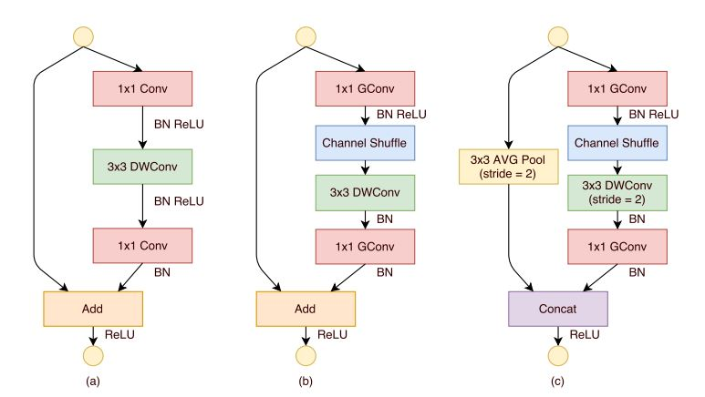

It utilize point-wise group
convolutions and channel shuffling and has 3 different
stages. Within a stage, the number of output channel remains same. As we proceed to successive stage, the spatiotemporal dimension is reduced by a factor of 2 and the
number of channels are increased by a factor of 2. V1 denotes version 1 of ShuffleNet and 2.0X denotes the 2 times
number of channels compared to original configuration.
More details can be found
here.

ShuffleNet Units. a) bottleneck unit with depthwise convolution (DWConv); b) ShuffleNet unit with pointwise group
convolution (GConv) and channel shuffle; c) ShuffleNet unit with stride = 2.